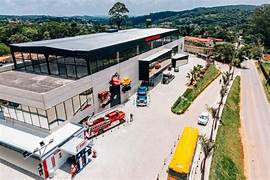
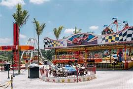
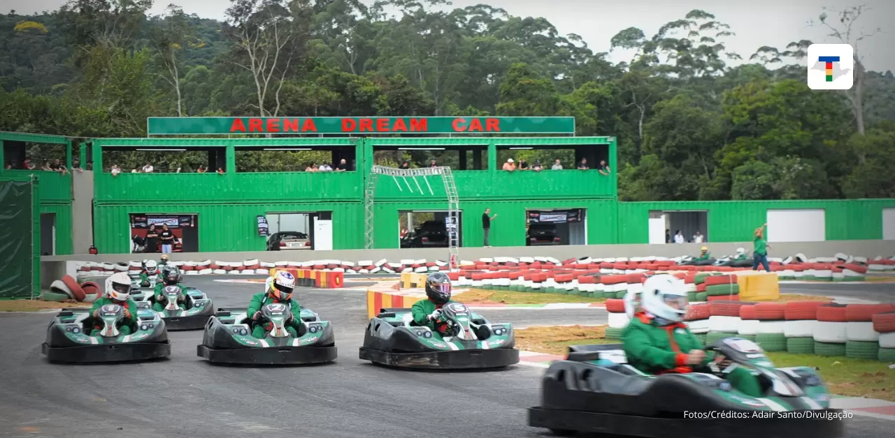
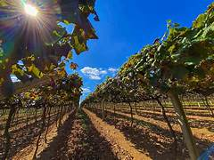
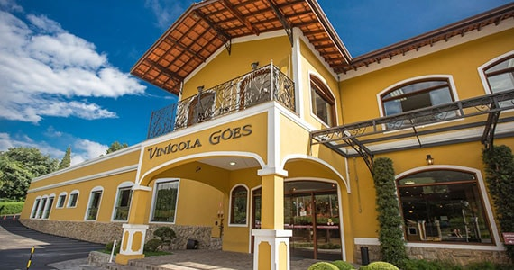
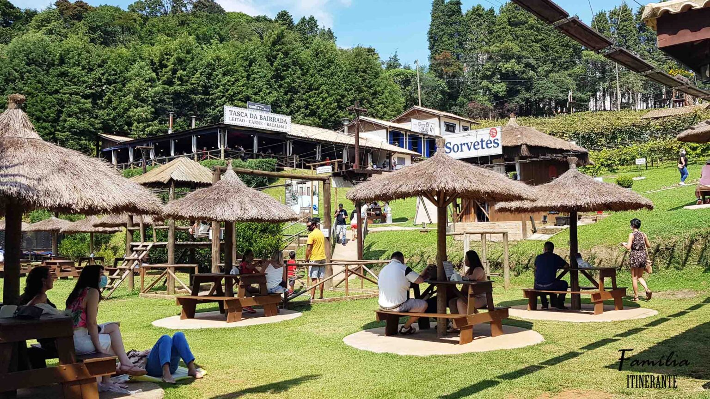
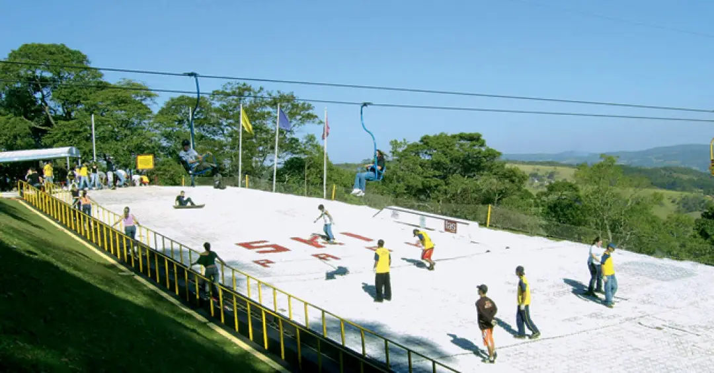
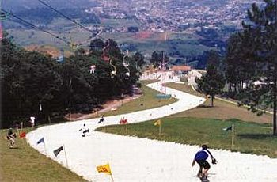
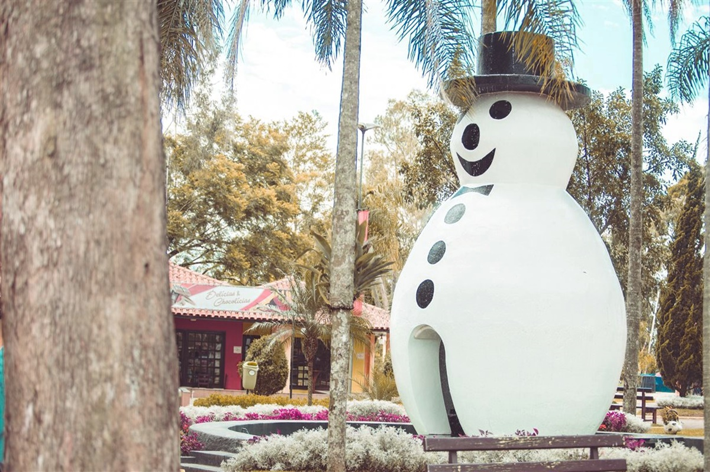

São Roque
Museu de Carros



- Museu de Carros: O museu abriga uma das maiores coleções de veículos clássicos do Brasil, com mais de 180 modelos expostos.
- parque: O museu também oferece áreas para crianças, com brinquedos temáticos.
- Kart: Há um kartódromo dentro do complexo, onde os visitantes podem desfrutar e participar de corridas de kart.
Estrada do Vinho



- Estrada do Vinho: A Estrada do Vinho, em São Roque, é um roteiro turístico repleto de vinícolas, restaurantes e paisagens encantadoras.
- Vinícola Góes::A Vinícola Góes é uma das mais tradicionais de São Roque, oferecendo degustações, visitas guiadas e belas áreas verdes.
- Quinta do Olivardo: A Quinta do Olivardo é um espaço inspirado na cultura portuguesa, com vinhos, pratos típicos e atividades temáticas.
Ski Mountain Park



- Ski Mountain Park: O Ski Mountain Park é um parque temático de esportes de inverno localizado em São Roque.
- Atividades: O parque oferece uma variedade de atividades, como esqui, snowboard, patinação no gelo e tobogã, proporcionando diversão para todas as idades.
- Estrutura: O parque conta com uma infraestrutura completa, incluindo restaurantes, lojas de aluguel de equipamentos e áreas de descanso.